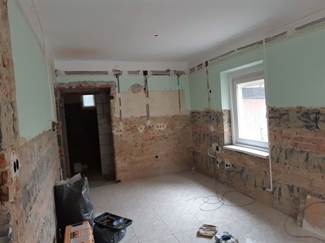
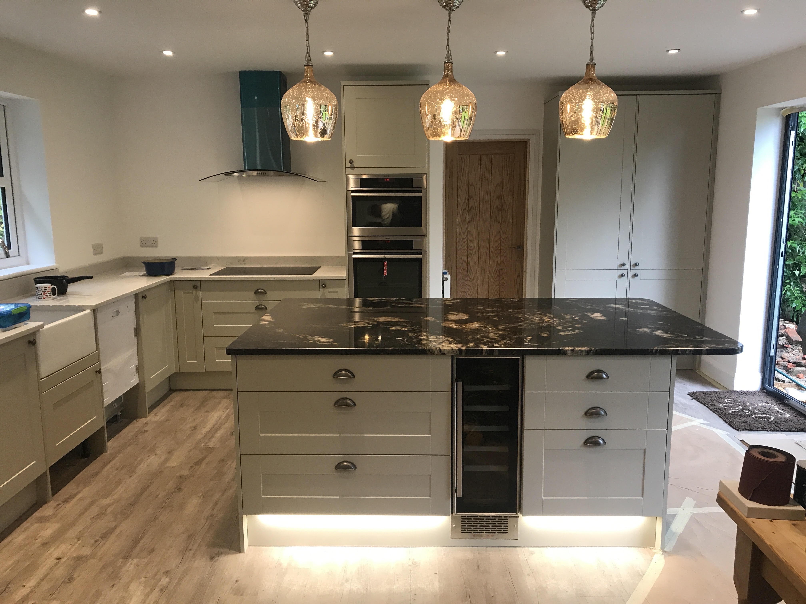

Épületvillamossági szerelések
- Ha most építi, vagy gondolkozik családi ház építésén, és még nem találta meg a megfelelő kivitelezőt, állunk rendelkezésére.
- Igényes, precíz munkavégzés, elérhető árakon.
- Anyagbeszerzésnél segítünk a legolcsóbb, de legjobb minőségű anyagokat kiválaszatni, akár a webáruházak versenyképes árait kihasználva.
- Érdemes már a tervezéskor gondolni az elektromos kivitelezőre. Segítünk kiválasztani a megfelelő energia igényt, a várható fogyasztás függvényében.
Hívjon bizalommal, ingyenes árajánlat készítés miatt!

A magyarországi régi lakások villamos hálózatának 70%-a megérett a cserére.
- Régi aluminium vezetékek, korszerűtlen kötési technikák cseréje, felülvizsgálata.
- Nagy áramfelvételű fogyasztók fogadásának előkészítése (mosógép, mosogatógép, főzőlap, villanysütő)
Keressen bátran, ingyenes felmérés,és árajánlat készítés rövid határidővel!

Új mérőhely kiépítésére szükség lehet:
- Teljesen új mérőhely kialakítása, pl üres telken
- Kikapcsolt mérőhely visszakapcsolásakor
- Teljesítmény bővítéskor ( több amper esetén, vagy 3 fázisú bővítés)
- Szabványosításkor
- Sok esetben napelem telepítéskor
Mérőhelyek kialakítását csak az E-ON által regisztrált szerelő végezheti! Akár családi ház, akár társasáházról van szó, kollégáinkkal vállaljuk E-ON területen a fenti munkák elvégzését, teljes körű ügyintézéssel.

Általában egy lakásban, házban a főzőlap, illetve villanysütő jelenti a legnagyobb fogyasztást. Nem ritka a 7-8kW teljesítményű tűzhely sem.
- Mindenképp ajánlom vásárlás előtt a szakemberrel való egyeztetést.
- A rendelkezésére álló hálózat függvényében megfelelő teljesítményű berendezést tudunk javasolni.
- Szükség esetén a kiválasztott berendezéshez elvégezzük a hálózat méretezését és annak kivitelezését.
Hívjon bizalommal, ha tanácsra van szüksége!
